GNOME Shell is one of the most used desktop interfaces on the Linux desktop, it’s part of the GNOME project and is considered to be the next generation of the old classic GNOME 2.x interface, GNOME Shell was first released in 2011 carrying a lot of features, including GNOME Shell extensions feature.
Extensions are simply extra functionality that you can add to your interface, they can be panel extensions, performance extensions, quick access extensions or for any other type of usage. They are all free and open source of course; you can install them with a single click from your web browser actually.
How To Install GNOME Shell Extensions?
First make sure that you are using GNOME Shell right now, and that you have Firefox browser installed, then head to extensions.gnome.org in order to browse and install the extensions you want, GNOME Extensions is a website provided by the GNOME team to install extensions without the need to extract compressed files and put them manually in the required directories, just browse what you want online and install in 1 click.
When you head to GNOME Extensions website, you may see the following message:
Just click on the “Allow..” button that you see up right, then refresh the page and you should be able to start installing the extensions, Here’s our list of some great extensions to try out:
User Themes
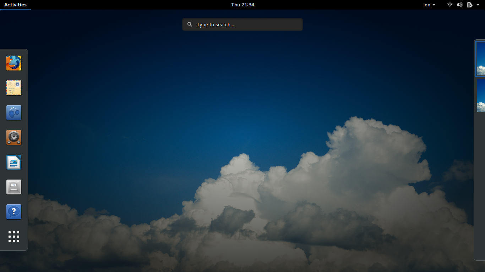
This is the first must-install extension on the GNOME Shell interface, it simply allows you to change the desktop theme to another one using the tweak tool (I don’t know what you guys at GNOME are doing, but if we have to install an extension and an extra tool to be able to change the desktop theme, we are way behind human civilization). After installation run gnome-tweak-tool in order to select a new theme.
Installation link: https://extensions.gnome.org/extension/19/user-themes/
Source Code: http://git.gnome.org/gnome-shell-extensions
Applications Menu
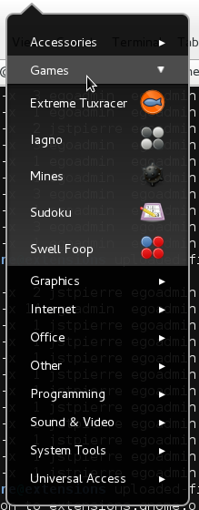
This extension simply adds a classic menu to the “activities” menu on the corner, by using it, you will be able to browse the installed applications and its categories without the need to use the dash or the search feature, which saves you time in some cases.
Installation link: https://extensions.gnome.org/extension/6/applications-menu/
Source Code: http://git.gnome.org/gnome-shell-extensions
Places Status Indicator
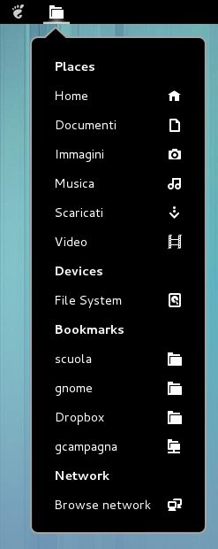
This indicator will put itself near the left corner of the activities button, it allows you to access your home folder and sub-folders easily using a menu, you can also browse the available devices and networks using it.
Installation link: https://extensions.gnome.org/extension/8/places-status-indicator/
Source Code: http://git.gnome.org/gnome-shell-extensions
Frippery Move Clock
If you are from those people who like alignment a lot, and dividing the panels into 2 parts only, then you may like this extension, what it simply does is moving the clock from the middle of the GNOME Shell panel to the right near the other applets on the panel, which makes it more organized.
Installation link: https://extensions.gnome.org/extension/2/move-clock/
Source Code: http://frippery.org/extensions
Frippery Panel Favorites
This extensions adds your favorite applications and programs to the panel near the activities button, allowing you to access to it more quickly with just 1 click, you can add or remove applications from it just by modifying your applications in your favorites (the same applications in the left panel when you click the activities button will appear here).
Installation link: https://extensions.gnome.org/extension/4/panel-favorites/
Source Code: http://frippery.org/extensions
MMOD Panel
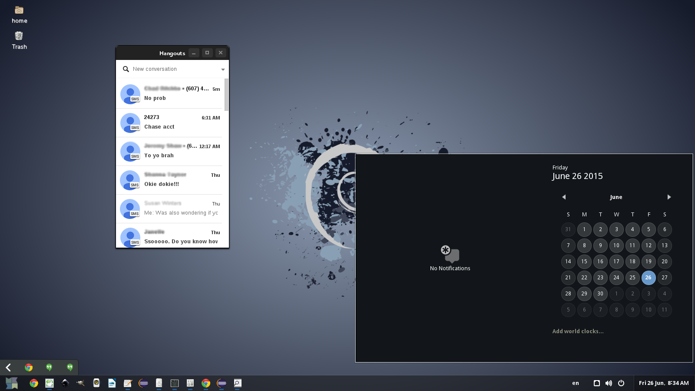
Another great extension that allows you to customize the GNOME Shell panel in a lot of ways, for example, you can move it to top or down, you can change its size, you can choose to enable the auto-hide feature and you can also modify the behavior of the panel, it’s a really good extension if you love customizing your interface.
Installation link: https://extensions.gnome.org/extension/898/mmod-panel/
Source Code: https://code.mmogp.com/mmod/mmod-panel/
OpenWeather
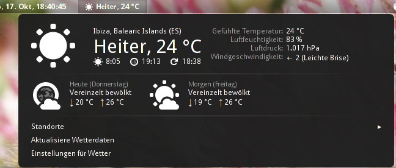
If you would like to know the weather forecast everyday then this extension will be the right one for you, this extension will simply add an applet to the top panel allowing you to fetch the weather data from openweathermap.org or forecast.io, it supports all the countries and cities around the world. It also shows the wind and humidity.
Installation link: https://extensions.gnome.org/extension/750/openweather/
Source Code: https://github.com/jenslody/gnome-shell-extension-openweather
Window List
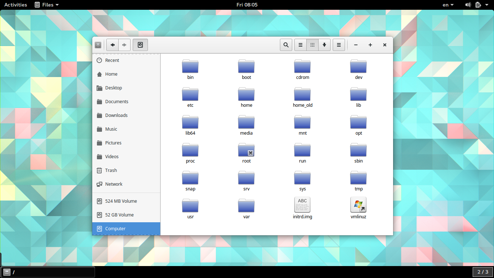
Officially supported by GNOME team, this extension adds a bottom panel to the desktop which allows you to navigate between the open windows easily, it also include a workspace indicator to switch between them.
Installation link: https://extensions.gnome.org/extension/602/window-list/
Source Code: http://git.gnome.org/gnome-shell-extensions
Todo.txt
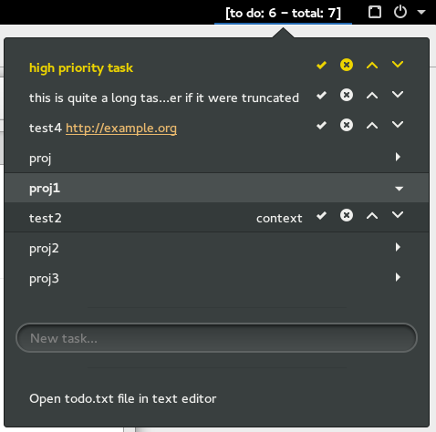
For users who like to maintain productivity, you can use this extension to add a simple To-Do list functionality to your desktop, it will use the syntax from todotxt.com, you can add unlimited to-dos, mark them as complete or remove them, change their position beside modifying or taking a backup of the todo.txt file manually.
Installation link: https://extensions.gnome.org/extension/570/todotxt/
Source Code: https://bitbucket.org/bartl/todo.txt-bart.libert.gmail.com
Skype Integration
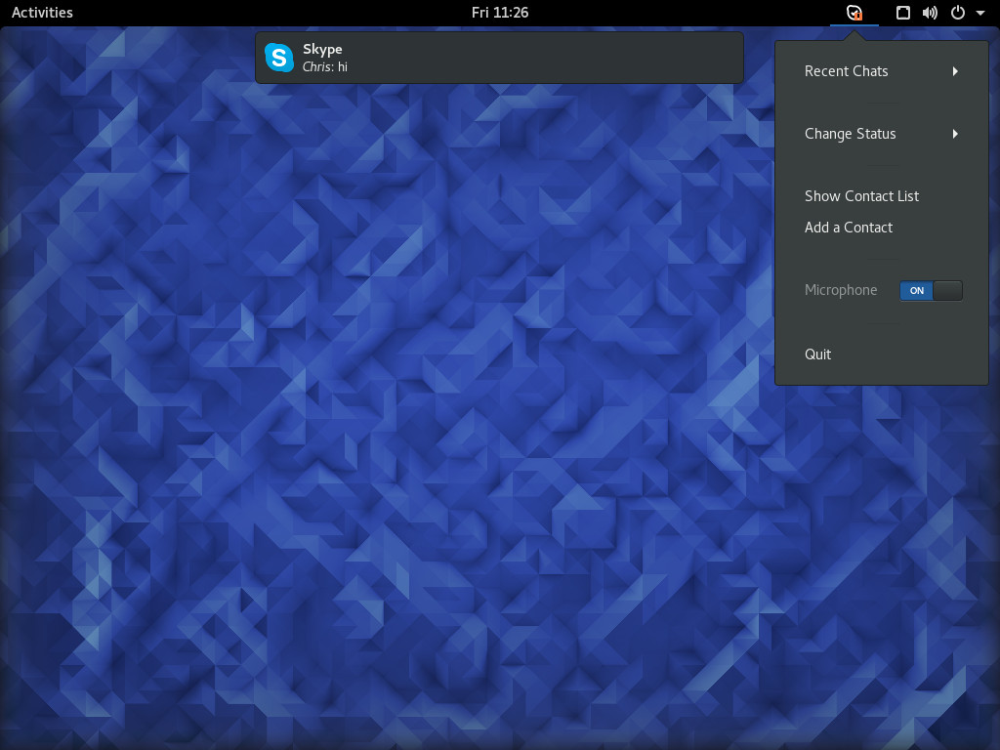
For Skype users, you can use this extension in order to add an integration with Skype, just make sure you have Skype installed and running before using it. The extension provides a lot of features like the ability to search for contacts in the dash, desktop shell notifications support and top bar applet that allows you to reach to Skype functionality easily.
Installation link: https://extensions.gnome.org/extension/696/skype-integration/
Source Code: https://github.com/chrisss404/gnome-shell-ext-SkypeNotification
System Monitor
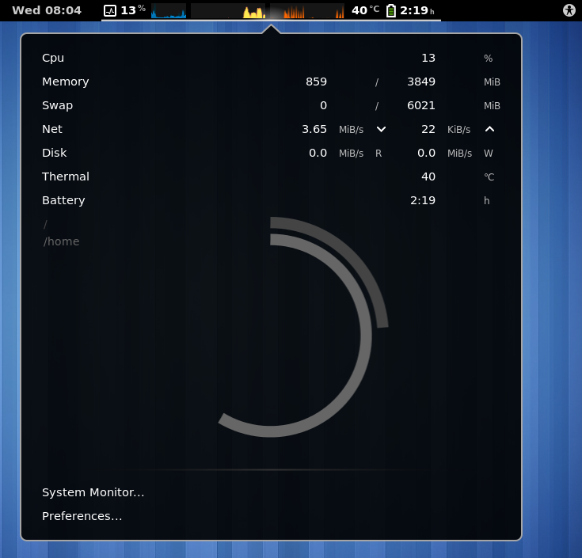
A simple applet to the top bar to display information about CPU usage, RAM usage, battery level, swap usage, disk I/O and network traffic up and down, it also works with GNOME 3.20 and contains a lot of options.
Installation link: https://extensions.gnome.org/extension/120/system-monitor/
Source Code: https://github.com/paradoxxxzero/gnome-shell-system-monitor-applet
WindowOverylay Icons
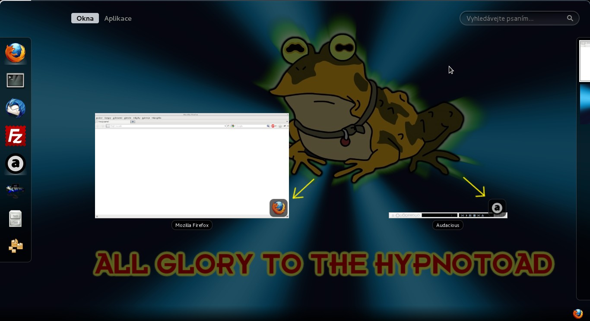
A very simple extension that does only one job: adds the application’s icon on the thumbnails in the dash view to give it a better appearance, I don’t know about you but it’s little thing that gives the look here.
Installation link: https://extensions.gnome.org/extension/302/windowoverlay-icons/
Source Code: https://github.com/sustmi/gnome-shell-extensions-sustmi/tree/master/windowoverlay-icons
Set a Random Wallpaper
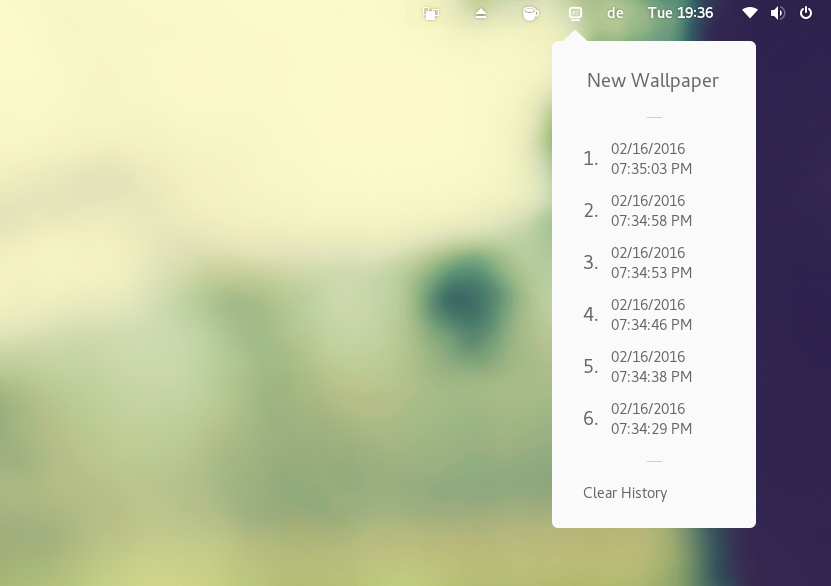
By using this extension, you will be able to select a random wallpaper everyday from a dropdown list on the top bar to change the desktop wallpaper automatically when you click it, it load the wallpaper from desktopper.co website.
Installation link: https://extensions.gnome.org/extension/1040/random-wallpaper/
No Topleft Hot Corner
If you don’t like opening the dash whenever you move the mouse to the left corner, you can disable it easily using this extension, you can for sure click the activities button if you want to open the dash view, but the hot corner will be disabled only.
Installation link: https://extensions.gnome.org/extension/118/no-topleft-hot-corner/
Source Code: https://github.com/HROMANO/nohotcorner/
Conclusion
This was our list for some great GNOME Shell extensions to try out, you may use the official website of GNOME or any other source to install those, but remember to be sure from its safety and source before doing so.
What other GNOME Shell extensions do you use?


{kind=link}
{kind=link}